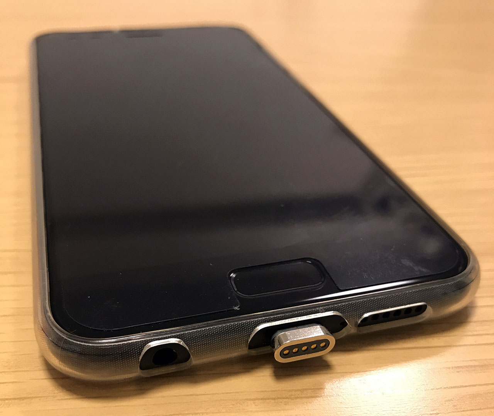
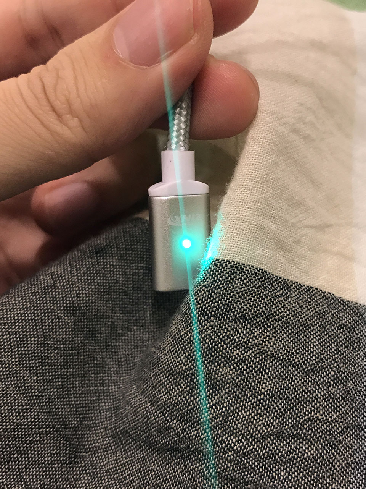
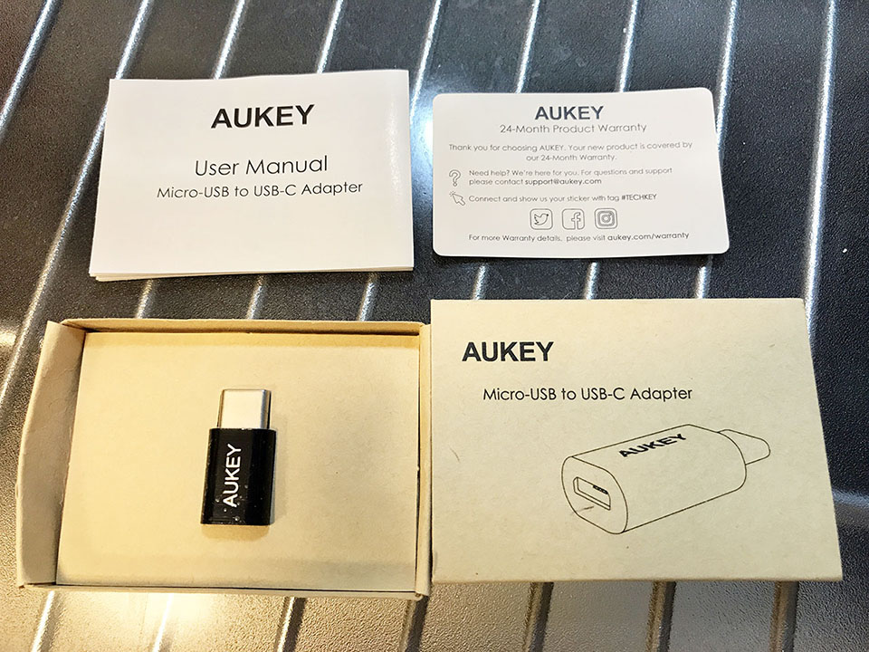
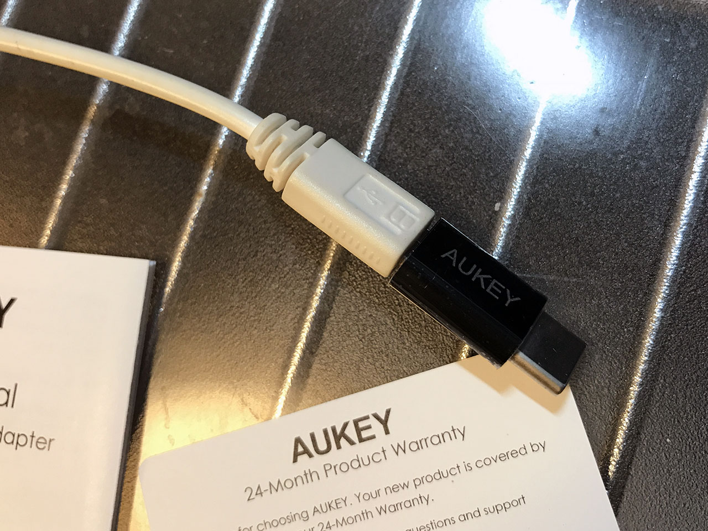

Asus ZenFone4 で使えた「マグネット式 USB Type-C ケーブル」と「Micro USB → USB Type-C 変換アダプタ」
Asus ZenFone4 で使えたアクセサリを紹介する。
目次
マグネット式 USB Type-C ケーブル
まずは、マグネットで接続できる USB Type-C ケーブルを買った。Zinx というメーカーのモノ。コレできちんと充電も出来た。
マグネットの先端は ZenFone4 に挿しっぱなしでも良いかもしれない。持つときにこの端子部分に指を引っ掛けて支えたりできて便利。

ケーブル側には LED が付いていて、通電していると緑色、端子がくっついて充電が開始されると青色に光る。これが結構眩しいので、枕元で充電したい人は考えものかも…。


ちなみに、Asus ZenBook3 用には以前コチラを買った。
Micro USB → USB Type-C 変換アダプタ
ついでに、元々持っていた Micro USB ケーブルを充電用に使い回すために、USB Type-C に変換するアダプタを買った。Aukey というメーカーのモノ。

先述のマグネットケーブルとは何も関係のない、互換性のないアダプタだが、出先で使う用なので気にしない。

コレで元々使っていたモバイルバッテリーを繋いで ZenFone4 が充電できるようになった。
